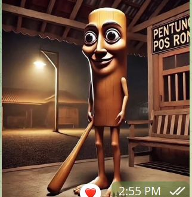

¡Hola! Soy Milana Isakova, estudiante del curso 1BTI en el Colegio Bautista de Encarnación. Me apasiona la tecnología, la programación y la electrónica, por eso disfruto mucho las clases donde aprendo desde HTML hasta el armado de circuitos.
Actualmente formo parte de un equipo que desarrolla un proyecto innovador: una pulsera inteligente capaz de detectar caídas y enviar una alerta de inmediato, pensada para brindar mayor seguridad a personas mayores o con movilidad reducida.
Me gusta investigar, resolver problemas y aprender cosas nuevas cada día, ya sea programando, soldando componentes o diseñando páginas como esta. Hablo español, inglés y ruso, lo que me permite conectar con distintas personas y culturas.